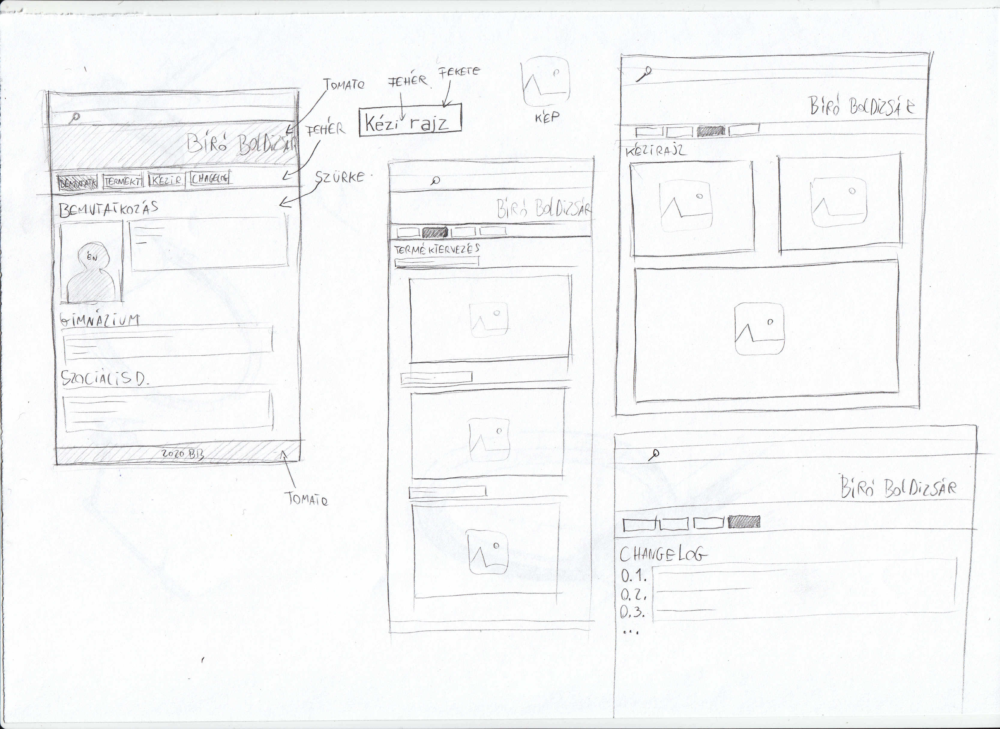
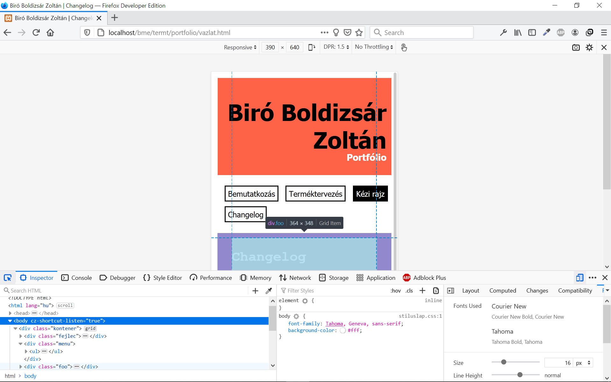

Biró Boldizsár Zoltán
Portfólió
Changelog
- 0.1. Oldalvázlat elkészítése papíron. Menü-elnevezések, tartalom megírása.
-

- 0.2. index.html, tt.html, kezirajz.html, vazlat.html, stiluslap.css fájlok létrehozása, html váz megírása, klónozása.
- 0.3. Grid struktúra kialakítása. Színvilág, betűtípusok kikísérletezése.
- 0.3.1. Reszponzív, rugalmas méterezésű képstílus létrehozása.
- 0.4. Index oldal leprogramozása, fotó optimalizálása (méretezés, tömörítés), feltöltése az i mappába. Ügyelni a címsorok logikai sorrendjére (H1-H4-ig).
- 0.5. Terméktervezés oldal leprogramozása. Lineáris elrendezése a fotóknak, árnyékolás. Fotók minimális tömörítése, méretezése.
- 0.6. Kézi rajz oldal leprogramozása. Az első két kép egymás mellé szerkesztése úsztatva (float:left, float:left).
- 0.6.1. Úsztatás felülírása grides elrendezéssel.
- 0.6.2. 3. kép beszúrása.
- 0.7. Hivatkozások ellenőrzése.
- 0.8. Reszponzív teszt a Firefox Developer böngészőben.
-

- 0.9. Böngésző-kompatibilitás ellenőrzése Internet Explorer 8-11, Opera, Chrome, Edge alatt.
- 1.0. Publikus verzió elkészülte.
© 2020 Biró Boldizsár Zoltán | Neptun-kód: I1VTZG